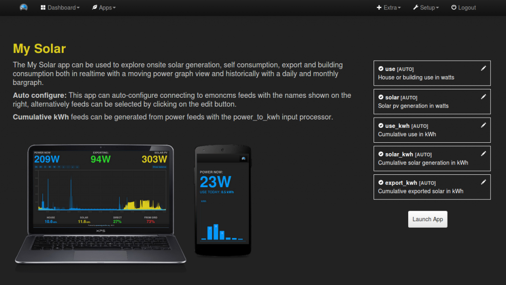
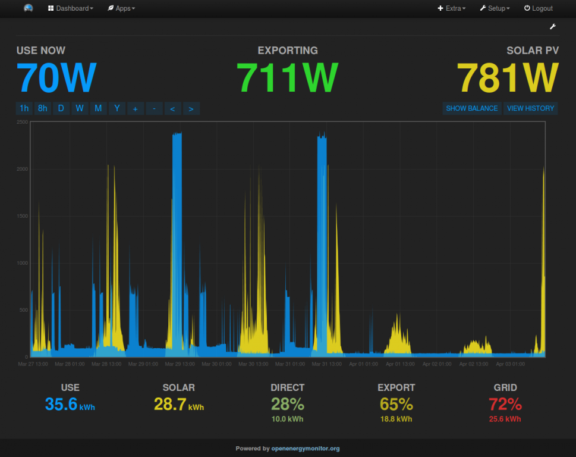
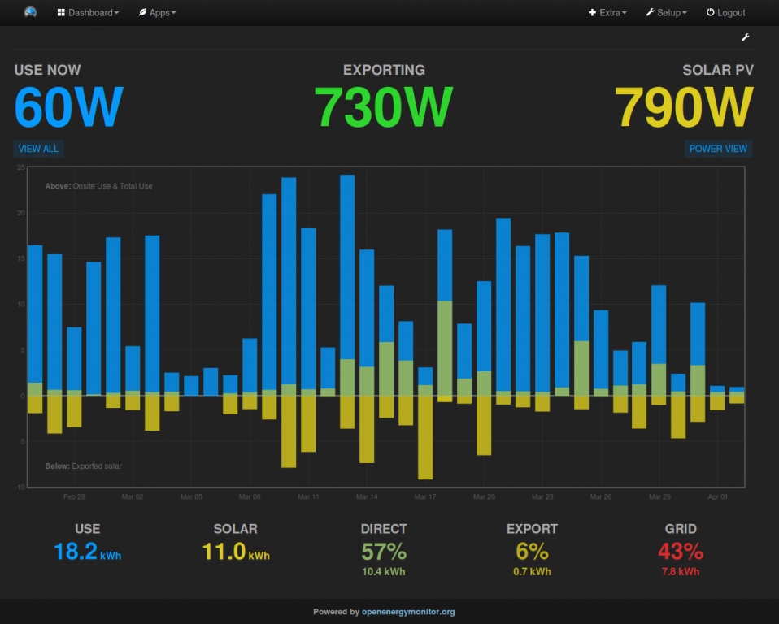

I'm working on updating the documentation for Solar PV monitoring, its been a while since the application page here: https://openenergymonitor.org/emon/applications/solarpv has been updated, the intention is to update it to reflect the development of the mysolarpv app and to give a clearer guide on setting up the required input processing.
I've also been working on an update to the mysolarpv web app to include a historic daily kWh view showing clearly the amount of solar generation exported and used on site on a daily basis. It uses the cumulative kWh approach to calculating daily data, and the new guide reflects the input processing required to produce the use, solar and export feeds required for the updated mysolarpv web app.
Glyn's been working on a new user guide website site. We've put the first draft of the new solar pv guide there (Glyn will post soon explaining in more detail the intention behind the dedicated user guide site)
http://guide.openenergymonitor.org/applications/solar-pv
For those keen to test the app module it can be explored on emoncms.org under:
emoncms.org/appdev#myelectric
emoncms.org/appdev#mysolarpv
emoncms.org/appdev#myenergy
or: https://github.com/emoncms/app/tree/mysolar_history
The configuration interface is modularised and consistent across each web app. We're currently testing and trying to find as many bugs as possible in the module.
If you have a lot of existing data, but it's not in the right form, I'm working on a post processing module to make it possible to post process power feeds into kWh data and calculate the required export or import feed and kWh feeds from existing data.
I don't think the current revision of the documentation has quite reached what it needs to be yet. The idea is that a link to this page would be much more prominent on the front page of OpenEnergyMonitor as a series of application blocks, to start with: home energy monitor, solar pv and then advanced setup. We would make sure that at least these core applications are fully supported and work out of the box easily. New users wanting to monitor solarpv compared to home consumption would arrive at this page, perhaps after spending a very short time scanning the front page, and so it would need to be a suitable introduction to the system but focused on the application at hand rather than complicated with all possible options. The intention is for the application guide to then link through to the more in-depth emonpi/emontx setup guide for things like wifi setup.
I will keep updating as I work on this, interested to hear thoughts on it so far.
Re: Development: Updating the documentation for Solar PV monitoring + updates to MySolarPV Web App
One question is whether the mysolar app should calculate a cumulative kWh export feed for generating the history view or calculate a cumulative kWh import. It's currently configured as export but perhaps import would actually be more sensible as this is the amount billed for - I need to check the implementation implications.
Re: Development: Updating the documentation for Solar PV monitoring + updates to MySolarPV Web App
A couple of screenshots of the new app module update:
Standard config interface across each web app:

My solar pv power view:

My solar daily kWh history view:
House consumption above 0 in blue. Solar used on site shaded yellow (green-ish) above 0. Solar exported below 0. Figures at the bottom show daily totals when mouse hovers over a bar.

Re: Development: Updating the documentation for Solar PV monitoring + updates to MySolarPV Web App
After installing the apps with git, I do not get the configuration screen allowing me to select my feeds, instead I get the attached screen.
What is the url to get to the configuration screen shown?
Thanks
Re: Development: Updating the documentation for Solar PV monitoring + updates to MySolarPV Web App
Did you select the mysolar_history branch? You can switch to it with:
git checkout mysolar_history
I should warn this is still in development, not bug free yet.
Re: Development: Updating the documentation for Solar PV monitoring + updates to MySolarPV Web App
I followed these instuctions:
cd /var/www/emoncms/Modules
git clone https://github.com/emoncms/app
Re: Development: Updating the documentation for Solar PV monitoring + updates to MySolarPV Web App
HI Trystan
I get an error message when opening up the My Electric app: ERROR: feed.getdataDMY invalid response: [object Object]
Which version of EmonCMS is required for the apps? I have 9.1 installe at the moment.
Besides that. everything seems to work it just not loads the kwh data on the my Electric app.
Re: Development: Updating the documentation for Solar PV monitoring + updates to MySolarPV Web App
@rjsears, to test this development version just run:
git checkout mysolar_history
in directory /var/www/emoncms/Modules/app
@firefox7518, it needs the current emoncms stable or master branch. We need to make a new release tag for this. it will probably be 9.5.
Re: Development: Updating the documentation for Solar PV monitoring + updates to MySolarPV Web App
Thanks Trystan
Maybe a short note would be good to let users know that. It was one the points which were always hard to find in the docs :-)
Regards from Switzerland
Andi
Re: Development: Updating the documentation for Solar PV monitoring + updates to MySolarPV Web App
I now use "House / Solar / Utilised / Grid / Surplus" as the names and order of the numbers below the graph. Everyone will have their own views about the right labels. Any chance of making at least those labels configurable in the same dialogue as the feeds? Order and colour not so important.
Re: Development: Updating the documentation for Solar PV monitoring + updates to MySolarPV Web App
Trystan,
This looks great. One thought, a lot of users will be diverting solar to either an immersion heater or some other device.
Would it be possible to include this as another section under the line so to speak. You have solar used in the home as green above the line but solar diverted, i.e. not returned to the grid should be under the line (to my mind at least).
Simon
Re: Development: Updating the documentation for Solar PV monitoring + updates to MySolarPV Web App
@Peter trying to keep the number of options down at the moment, can the naming be improved as standard? It would be good if it was applicable to multiple kinds of buildings not only houses but perhaps the Utilised/Direct and Surplus/Export could be set to the better names if there is common agreement?
@Simon, Perhaps two levels of shading above the line could represent diverted consumption? so you would have green shade 1 diverter solar to hot water, green level 2, other self-consumption and then blue imported? Keen to keep it simple as it is for now though. Need to ensure the basics work well before adding too many variations. But worth keeping in mind for the future.
Re: Development: Updating the documentation for Solar PV monitoring + updates to MySolarPV Web App
I've changed the history view on the new mysolar app to use a grid import cumulative kWh feed rather than a exported solar cumulative kWh feed - as its likely the more useful feed to calculate. The cumulative import feed can then be used in with the myelectric app to calculate energy cost from the grid.
The output looks exactly the same. I've also updated the documentation to reflect this:
http://guide.openenergymonitor.org/applications/solar-pv
Re: Development: Updating the documentation for Solar PV monitoring + updates to MySolarPV Web App
I think the problem with labels like those on the mysolar app is that you will never get consensus, hence my suggestion of making them confiigurable.
If not in the GUI how about at least abstracting them out and commenting a block of set-up code in the JS that lets more, cough, advanced, users change the labels without tripping over other bits of HTML and JS ?